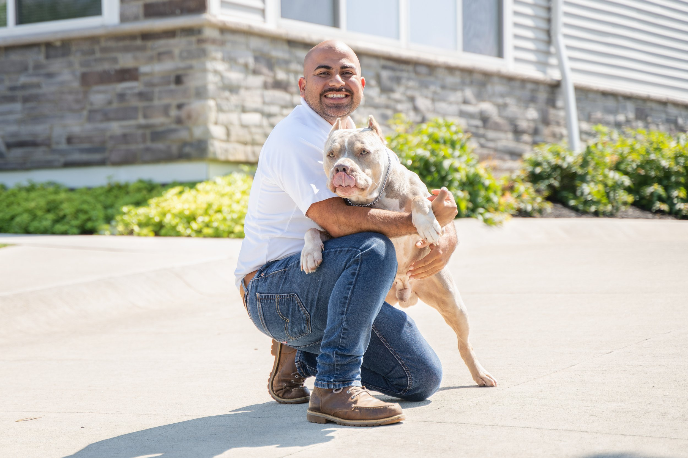

Jacob Perez
San Antonio, TX
Jacob brings Marine Corps discipline, sports medicine, personal training, and dog-industry experience into his LDTT work.

San Antonio, TX
Jacob brings Marine Corps discipline, sports medicine, personal training, and dog-industry experience into his LDTT work.
Jacob Perez I was born and raised in the San Antonio area and later spent 15 years building a life in San Diego. Growing up in the small town of Lytle, I developed a deep connection with dogs at an early age. My father’s ranch was home to several stray dogs, and as a kid, I naturally gravitated toward them.
By feeding them, caring for them, and earning their trust, I found some of my earliest and most loyal friendships. Looking back, that’s where my passion for dogs truly began. At 18, I answered the call to serve and joined the United States Marine Corps.
I spent six years on active duty before continuing my service in the reserves. The Marine Corps taught me discipline, leadership, accountability, and the value of working as part of a high-performing team. Those qualities continue to shape every aspect of my life today.
In 2016, I was accepted into San Diego State University, where I earned a degree in Sports Medicine. I also became a certified personal trainer, building a career focused on health, performance, and helping others reach their potential. But despite my passion for fitness, I found myself increasingly drawn toward working with dogs.
My military experience alongside canine handlers, my time working in the pet industry, and most importantly, raising and training my first American Bully, Carrot, all pointed me in the same direction. Watching my own dog transform through consistent training was incredibly rewarding. The bond we built and the progress we achieved sparked something in me… It made me realize that I wanted to help other owners experience that same sense of pride, confidence, and connection with their dogs.
After working with several training companies, a friend introduced me to Lorenzo’s Dog Training Team. From the moment I experienced their approach, I knew I had found the right place. The professionalism, standards, and results stood apart from anything I had seen before.
Today, my goal is to continue growing into a Master Trainer and to learn from some of the best professionals in the industry. I thrive in team environments and enjoy mentoring and supporting fellow trainers across the country. There is nothing more rewarding than helping people strengthen their relationship with their dogs and watching both owner and dog gain confidence together.
Outside of work, you’ll usually find me training in martial arts, riding my motorcycle, or spending time with my dogs. Above all, I value family. No matter where life takes me, the time I spend with the people and dogs I care about most is what keeps me grounded.
Send your request directly to Lorenzo's office with Jacob Perez already assigned as the source trainer.